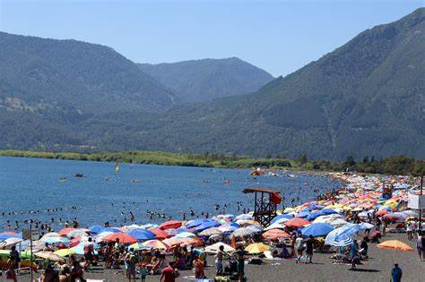
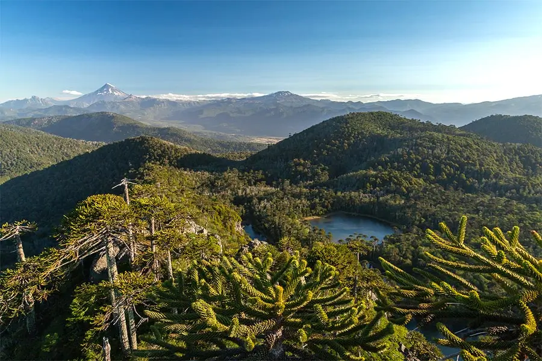
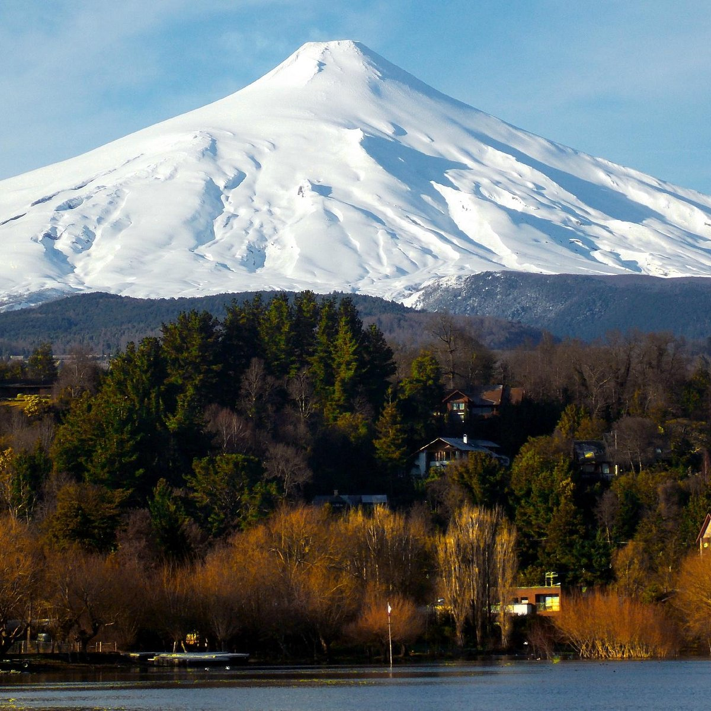
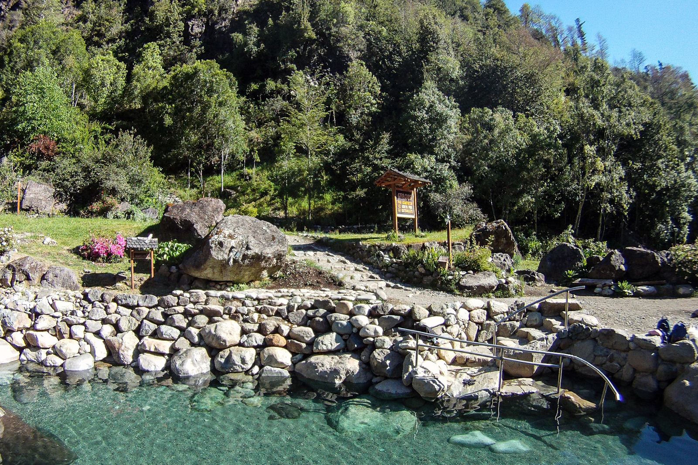

Turismo em Chile
Aqui você encontrará os lugares mais lindos para visitar no Sul do Chile. Além de se informar de valores, melhores épocas para visitar, dicas e muito mais!
Sobre nós
Somos um casal composto por uma brasileira e um chileno. Queremos mostrar para vocës onde estamos vivendo atualmente e as maravilhas que nossa cidade e entorno podem oferecer!
Chile
Um país pequeno mas com grande valor!
Chile, oficialmente República do Chile, é um país da América do Sul que ocupa uma longa e estreita faixa costeira encravada entre a cordilheira dos Andes e o Oceano Pacífico. Faz fronteira ao norte com o Peru, a nordeste com a Bolívia, a leste com a Argentina e a Passagem de Drake, a ponta mais meridional do país. O Pacífico forma toda a fronteira oeste do país, com um litoral que se estende por 6 435 km. Com quase 20 milhões de habitantes, o Chile compreende alguns territórios ultramarinos, como o Arquipélago Juan Fernández, as Ilhas Desventuradas, a ilha Sala y Gómez e a ilha de Páscoa, sendo que as duas últimas estão localizadas na Polinésia. O Chile reclama a soberania de 1 250 000 quilômetros quadrados de território na Antártida. É um dos dois únicos países da América do Sul que não têm uma fronteira comum com o Brasil, junto com o Equador.
O Chile possui um território incomum, com 4 300 quilômetros de comprimento e, em média, 175 km de largura, o que dá ao país um clima muito variado, indo do deserto mais seco do mundo — o Atacama — no norte do país, a um clima mediterrâneo no centro, até um clima alpino propenso à neve ao sul, com geleiras, fiordes e lagos.[6] O deserto do norte chileno contém uma grande riqueza mineral, principalmente de cobre. Uma área relativamente pequena no centro chileno domina o país em termos de população e de recursos agrícolas. Esta área é o centro cultural, político e financeiro a partir do qual o Chile se expandiu no final do século XIX, quando integrou as regiões norte e sul em uma só nação. O sul do país é rico em florestas e pastagens e possui uma cadeia de montanhas, vulcões e lagos. A costa sul é um gigantesco labirinto de penínsulas compostas por fiordes, enseadas, canais e ilhas. A cordilheira dos Andes está localizada por toda a fronteira oriental chilena.
Passeios imperdíveis
Aqui vamos listar os lugares mais incríveis e mais visitados da cidade onde vivemos:
-
Ojos de Caburga
Um poço com água azul celeste e uma cachoeira fazem parte do complexo de lagos que se situam na regiao de Caburgua.

-
Playa Grande
Uma praia de lago com vista ao vulcao Vilarrica e com areia vulcanica. A água é gelada, mas a paisagem e a paz sao indescritíveis!
 -
El cañi
Uma montanha de 1.200 metros de subida, tem lagos e vegetacao riquissima em suas trilhas.
 -
Vulcao Vilarrica
O único vulcao ativo da América Latina. No inverno é possível praticar esqui e snowboard.
 -
Termas Los Pozones
Essas termas naturais possuem pocos com temperatura de até 42 graus.
